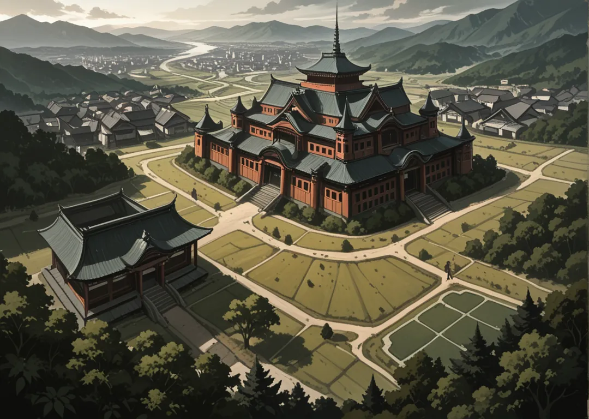

Mayores
Raion (León) · Okami (Lobo) · Usagi (Conejo) · Tora (Tigre) · Kuma (Oso)
Al sur está Tsuchi, la tierra, con su capital en medio de unas imponentes llanuras y ríos, rodeada por colinas y alguna que otra montaña baja. Texto íntegro p.4 de nakama.txt.
Hace 50 años Katsuro Raion unió a los Yosais para romper el yugo del Kotei Kobura, un tirano que tenía en semiesclavitud al resto de los Yosais. El mismo Katsuro se proclamó Kotei cambiando su nombre a Tsuchi, en honor a su propio Yosai, y estableciendo una corte donde tratar temas con el resto de Yosais, dándoles una independencia de la que jamás habían gozado.

Raion (León) · Okami (Lobo) · Usagi (Conejo) · Tora (Tigre) · Kuma (Oso)
Neko (Gato) · Uma (Caballo) · Inu (Perro) · Inoshishi (Jabalí) · Ushi (Buey)
Arumajiro (Armadillo) · Sai (Rinoceronte) · Yagi (cabra) · Kamereon (camaleón) · Kirin (jirafa) · Nezumi (ratón) · Shika (ciervo) · Zou (elefante)
La corte de Tsuchi convoca a los Daimyos; los PJs deben llevar un mensaje sellado sin abrirlo —¿qué oculta?
Raion y Okami disputan el voto del consejo; los PJs son mediadores y blancos fáciles.
Capital en la llanura central, cruzada por el río Aoi y rodeada de colinas bajas. El palacio es una fortaleza de tierra apisonada con murallas de 12 varas. Cada estación se celebra el Matsuri de la Cosecha donde los Kizoku juzgan el grano.
Kotei-Tsuchi Raion Haruto (51, melena leonina, proclamado Kotei hace 50 años). Preside el Consejo de las Cinco Mayores. Su consejero es Okami Jiro, táctico de las llanuras.
Tsuchi valora la paciencia y la ley. Exporta arroz, caballos y piedra. Importa sal de Mizu y acero de Hi. Los niños aprenden a montar a los 7 años.
Daimyo Raion Katsuro II (38, hijo del Kotei). Dojo del rugido. Especialidad: jutsus que evitan movimiento. Guarda el Sello de la Llanura.
Daimyo Okami Yuki (31, loba blanca). Maestra en Supervivencia y rastreo. Su manada patrulla las colinas.
Daimyo Neko Chie (27, sigilosa). Regenta el mercado negro de la capital. Su hijo quiere ser Kage.